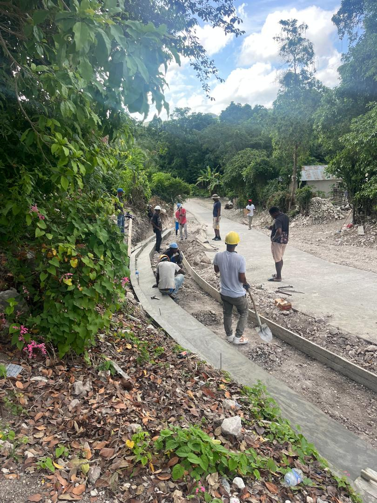

Our Projects
Roads for Labalèn
Better road access matters for children going to school, families making daily trips, and residents moving materials through Labalèn.

Phase 1 · Morne Charmit
From the field
The November 2026 project update reported that the central concrete strip, measuring 82 metres long and 3 metres wide, was complete. The photos show the strip and work along the sides.
Choose a date to browse the photos.
Compare two views of Morne Charmit

Open full photoNovember 25, 2026
Work on the bend
The crew worked beside the existing concrete strip and shaped the roadside concrete.
Compare two views of Morne Charmit
Drag the divider or use the arrow keys. These Phase 1 photos were taken from different viewpoints on November 20 and 25.

Phase 2 · Planned
A better road to school
The proposed improvement covers 150 metres, primarily in front of a school.
GoFundMe link pending. We’ll post the campaign link here when it’s available.
- Planned section
- 150 m
- Estimated budget
- US$16,000